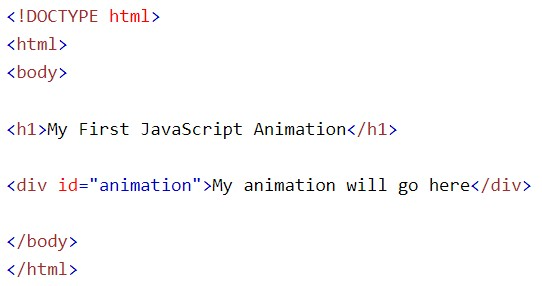
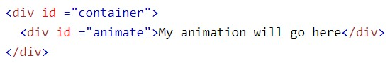
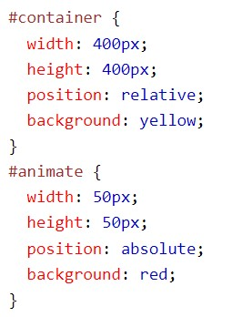
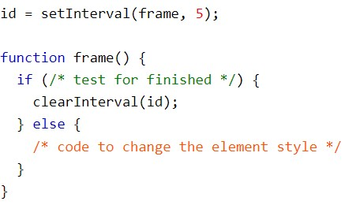
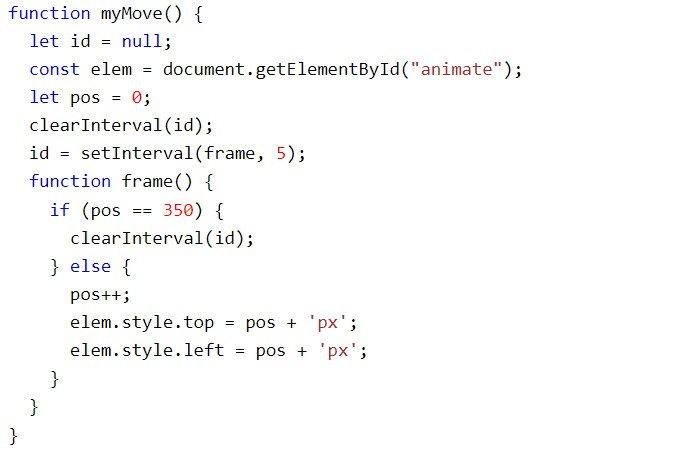

Una página web básica
Para demostrar cómo crear animaciones HTML con JavaScript, usaremos una página web simple:

Crear un contenedor de animación
Todas las animaciones deben ser relativas a un elemento contenedor.

Dale estilo a los elementos
El elemento contenedor debe crearse con estilo = " position: relative".
El elemento de animación debe crearse con estilo = " position: absolute".

Código de animación
Las animaciones de JavaScript se realizan mediante la programación de cambios graduales en el estilo de un elemento.
Los cambios son llamados por un temporizador. Cuando el intervalo del temporizador es pequeño, la animación parece continua. El código básico es:
